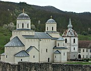

Disclaimer: These pages are not actively maintained, and some of the practical information on the site is out of date. I am working on a new version of the site that will focus more on my photos and memories of travel in Southeast Europe, and less on practical details that too easily become obsolete. In the meantime, please treat the information here with caution.
Serbia :: Frequently Asked Questions
Some general questions about the Balkans are answered in the Overview section. Please note that everything on this page except question number 5 refers to "Serbia proper", excluding Kosovo, of which I have no direct experience.
Questions
- Is it safe?
- I'm from Britain / the USA. Will people in Serbia be aggressive towards me because of the NATO bombing?
- Is it possible to get to any mediaeval monasteries by public transport?
- What is the best way to get from Belgrade to Sarajevo?
- I have heard rumours about something called the "Kosovo entry stamp problem" - what's that all about?
Answers
-
Is it safe?
The Bradt Guide says that "as long as you keep away from large public demonstrations, and avoid the few areas where there are obvious ethnic tensions, Serbia is very safe indeed". This accords with my own subjective impression that Serbia is as safe as any European country, and probably safer than some. There are some misconceptions about this, as Serbia is linked in many people's minds with violence and war. However ethnic violence within Serbia itself has in fact been very rare, and Serbia did not become involved in land warfare on its own soil in the post-Yugoslav period. As a result it does not have the legacy of land mines that is still a problem in neighbouring Bosnia. There has occasionally been some tension in the extreme south, near the Kosovo border, but few foreigners visit this area anyway. Similarly, while the activities of Serbia's gangster classes get quite a lot of publicity, these people are involved in more lucrative games than picking the pockets of the occasional tourist who wanders through Serbia.
Having said all that, the future of Kosovo remains highly contentious, and it's impossible to completely rule out the possibility that at some point this will have a knock-on effect in Serbia itself. So if you are going to Serbia, keep an eye on news from the Balkans, just in case.
-
I'm from Britain / the USA. Will people in Serbia be aggressive towards me because of the 1999 NATO bombing?
I found that people in Serbia were consistently friendly. For the record I should acknowledge that I happen to be from a country that is not a NATO member. As this would not have been obvious to people I met casually, I imagine that any English-speaking foreigner could expect a similar reception. I haven't heard any reports of British or American travellers experiencing any hostility, and the English author of the Bradt Guide doesn't mention it as an issue.
-
Is it possible to get to any mediaeval monasteries by public transport?
The hills of Central Serbia are dotted with small but beautiful monasteries, usually tucked away in wooded valleys; ideally any tour of Serbia should include a few of them. Their remote locations enhance their beauty but can make them time-consuming to reach, especially if you are not driving. Nevertheless you can see plenty with a little patience. If you understand even a few words of Serbian it might be worth looking at Serbia Travel Club for more information.
- The fortified monastery at Manasija is fairly easy to reach. There are about 5 buses on weekdays from Belgrade to the small town of Despotovac (2 hours) - check times at the Belgrade Bus Station website (links). There are also several daily buses to Ćuprija, useful if you are coming from the south along the main Morava valley route (from Niš, for example). Both routes have far fewer buses on weekends. The timetable doesn't really allow for a daytrip from Belgrade - it's easier to stay the night in Despotovac, which has a couple of hotels. From Despotovac it's just a short walk to the monastery.
-
Žiča is probably not one of the most memorable monasteries, but it is certainly one of the easiest to reach. It is on the outskirts of Kraljevo, a major road junction. You can get to the monastery by local bus or taxi, or a longish and fairly dull walk.
Mileševa Monastery - To get to Ljubostinja, first get to the town of Trstenik. This is easy to do as it is served by frequent buses (and the odd slow train) between the cities of Kraljevo and Kruševac. From Trstenik the monastery can be reached in a pleasant hour's walk along a quiet valley road .
- Also near Kraljevo is Studenica. Frequent buses to Novi Pazar stop at Ušče, from where much less frequent buses cover the 12km to Studenica.
- Mileševa is about 6km from Prijepolje, a station on the main line from Belgrade to Montenegro. It's walkable, but it might be better to take a taxi, at least for the uphill leg.
- Đjurđevi Stupovi can be reached by a couple of paths from Novi Pazar. You might get lost a couple of times but if you keep going uphill you should get there eventually.
Read more about some of these monasteries: Southwestern Serbia.
-
What is the best way to get from Belgrade to Sarajevo?
This is discussed (for the reverse direction) in the Bosnia FAQ.
-
I have heard rumours of something called the "Kosovo entry stamp problem" - what's that all about?
This question becomes ever more complicated. First I will describe the situation as it applied up to mid 2008, but please read on for an update.
The issue arises because the Serbian authorities see Kosovo as a province of Serbia. But as Serbia no longer has any practical role in governing Kosovo, its boundaries with Montenegro, Albania, and Macedonia are not manned by Serbian border guards. This means that if you enter Kosovo from one of these countries, you will not get the entry stamp that foreign visitors normally get on entering Serbia. The same applies if you fly into Pristina. This poses no problem if you intend to leave Kosovo by air or by crossing to Montenegro, Albania, or Macedonia. As far as the Kosovo authorities (and UN administration) are concerned you will be in Kosovo legally, and as you will have no dealings with Serbian officials, the lack of an entry stamp won't be an issue.
The problems arises if you now want to continue from Kosovo to Serbia "proper". The border between Kosovo and Serbia is regarded as an "administrative boundary", not an international border, so you can't get a Serbian entry stamp there either. You will therefore be entering Serbia illegally. This might result in you being turned back at the adminstrative boundary - one traveller reports having experienced this in 2007 (read his blog entry). Or it might be noticed if for some reason you come to police attention while in Serbia. Or the border guards may notice the lack of an entry stamp when you come to leave Serbia. Or, quite possibly, no-one may notice at all.
The problem can be avoided, at the cost of some wasted time, by travelling to Skopje in Macedonia and then Serbia, thus obtaining a normal Serbian entry stamp at the Macedonian border crossing. The same applies if you go to Montenegro and then Serbia, which may be preferable for nationalities needing a visa for Macedonia.
Just to recap, the following sequences should not normally cause problems:
(1) Enter Serbia by air or at any land border other than Kosovo, travel to Kosovo, return to Serbia, exit Serbia (showing the entry stamp from when you first entered).
(2) Enter Kosovo by air or via Albania/Montenegro/Macedonia, exit Kosovo by air or via Albania/Montenegro/Macedonia (not necessarily the same one you entered by).
(3) Enter Serbia by air or at any land border other than Kosovo, travel to Kosovo, exit Kosovo to Albania/Montenegro/Macedonia.In December 2009 the Serbian Interior Minister apparently indicated that Serbia is planning on taking a more relaxed attitude towards travellers coming from Kosovo, but gave no details on when this new approach will begin.